Zehao Xiao
Postdoctoral Researcher, Huawei Noah's Ark Lab, Paris
Ph.D., University of Amsterdam (VIS Lab & AIM Lab)
About
I'm currently a postdoctoral researcher at Huawei Noah's Ark Lab in Paris, where I work on pre-training and post-training of time series foundation models. Before that, I completed my Ph.D. in the VIS Lab & AIM Lab at the University of Amsterdam, supervised by Cees Snoek and co-supervised by Xiantong Zhen. During my Ph.D. I mainly worked on generalization and test-time adaptation, and I was a member of the ELLIS society. Before joining UvA in 2020, I received my Master's and Bachelor's degrees from Beihang University.
My research focuses on domain generalization, test-time adaptation, meta-learning, vision-language models, and multimodal alignment. More recently, I have been working on pre-training and post-training for time series foundation models (TSFM).
News
- [Jun 2026] Oral paper accepted to the ICML 2026 Workshop on Foundation Models for Structured Data.
- [May 2026] Papers accepted to ICML 2026, Nature Communications, and TMLR.
- [Jan 2026] One paper accepted to ICLR 2026.
- [Jun 2025] Successfully defended my thesis Learning to Generalize at Test Time.
- [May 2025] One paper accepted to ICML 2025.
- [Jan 2025] One paper accepted to ICLR 2025.
- [Nov 2024] Survey Beyond Model Adaptation at Test Time released; one paper to WACV 2025.
- [Apr 2024] Papers accepted to NeurIPS 2024 and CoLLAs 2024.
- [Feb 2024] One paper accepted to CVPR 2024.
- [2021-2023] Papers at ICLR 2022/2023, NeurIPS 2022/2023, ICML 2021.
Publications
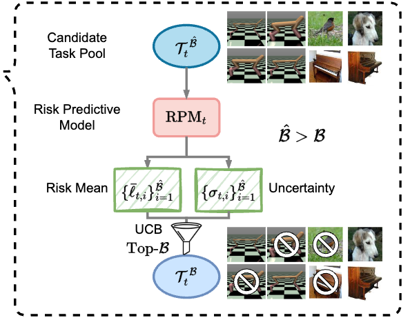
Model Predictive Task Sampling for Efficient and Robust Adaptation
Nature Communications, 2026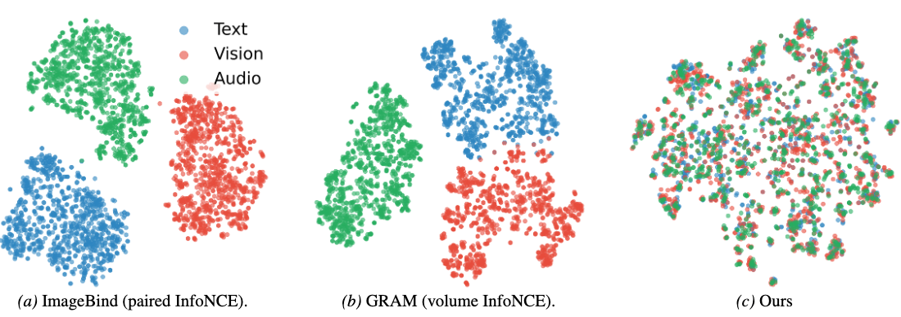
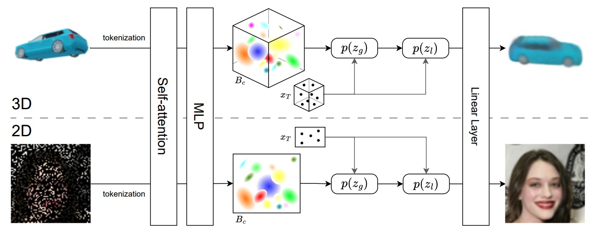
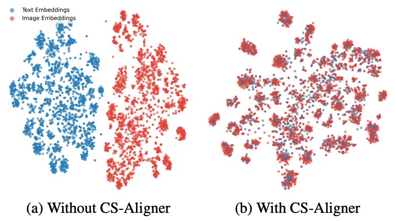
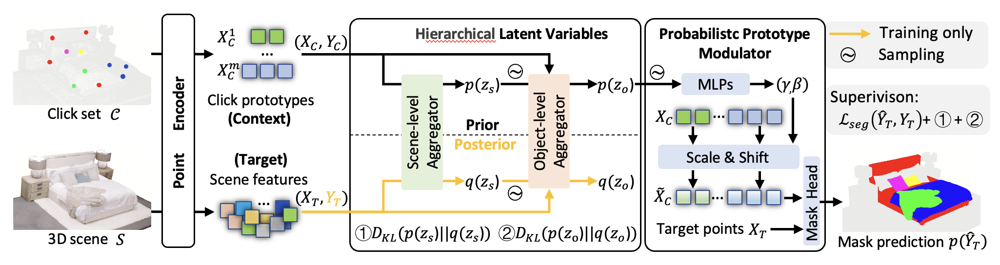
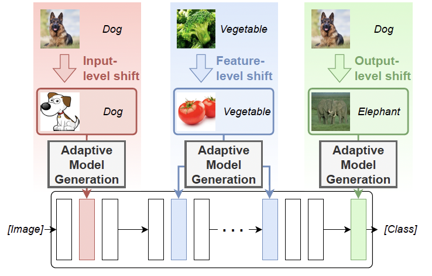
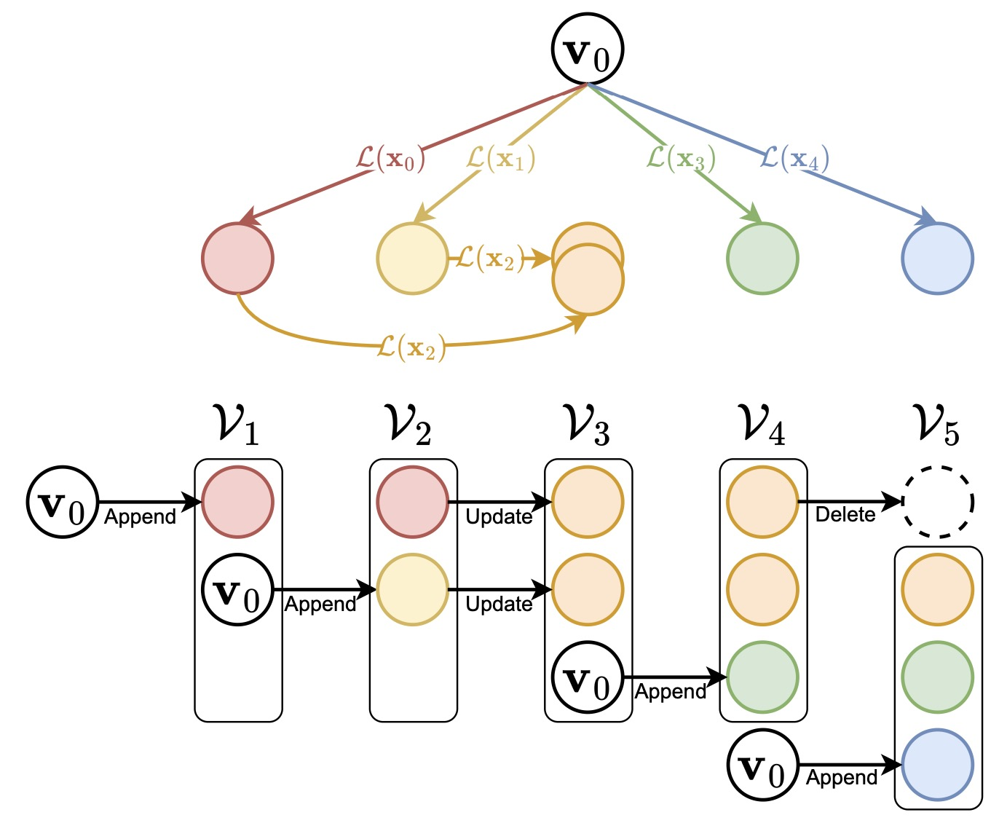
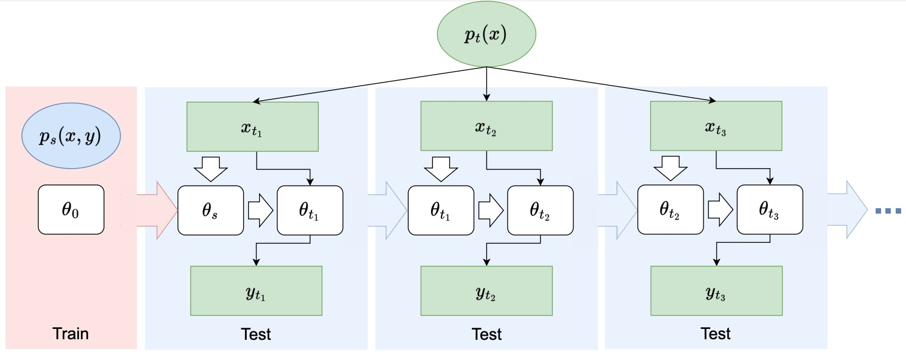
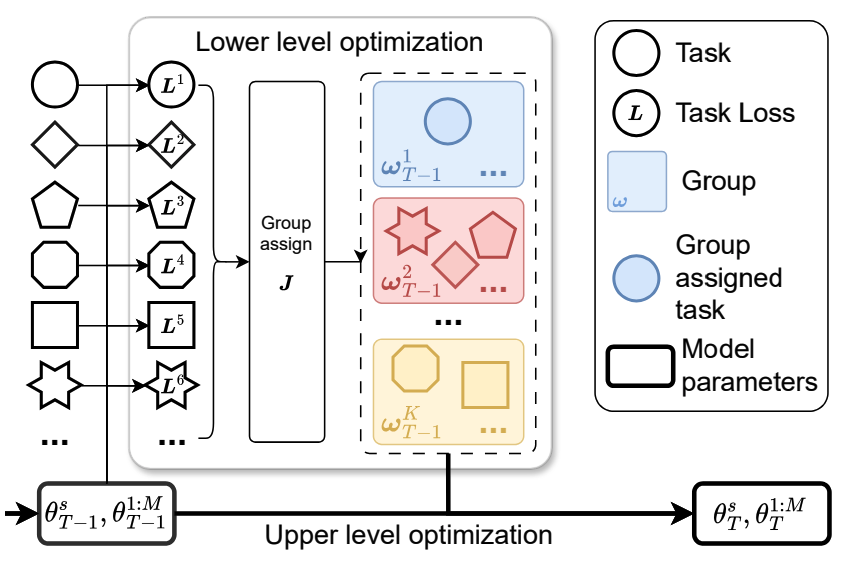
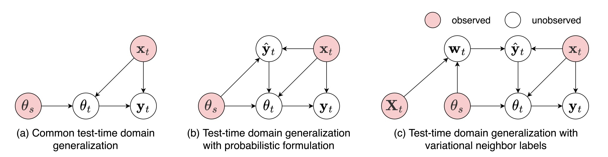
Probabilistic Test-Time Generalization by Variational Neighbor-Labeling
CoLLAs, 2024Variational neighbor labels with meta-generalization: pseudo labels as latent variables, meta-learned with variational inference and neighboring information for test-time domain generalization.
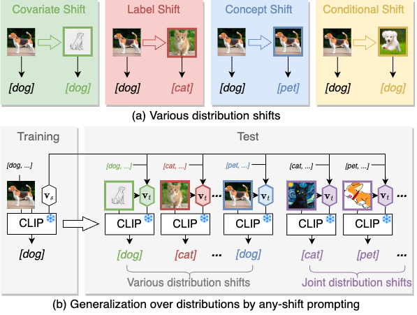
Any-Shift Prompting for Generalization over Distributions
CVPR, 2024A general probabilistic inference framework that uses both training and test task information for prompt generation, improving generalization across distribution shifts.
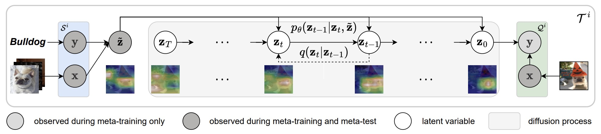
ProtoDiff: Learning to Learn Prototypical Networks by Task-Guided Diffusion
NeurIPS, 2023A task-guided diffusion model during meta-training that gradually generates prototypes for efficient class representations.
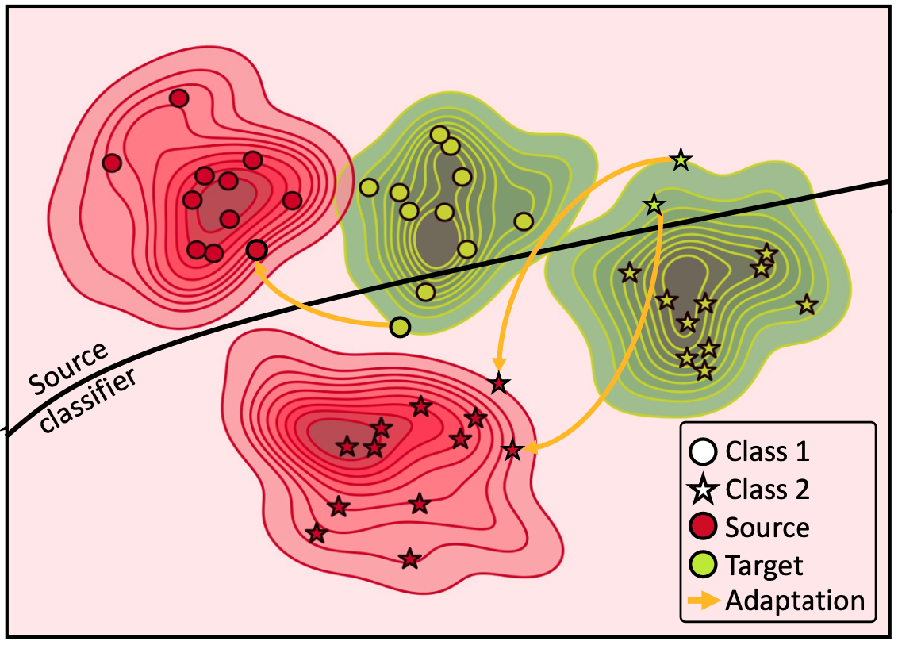
Energy-Based Test Sample Adaptation for Domain Generalization
ICLR, 2023A discriminative energy-based model that adapts target samples to the source domain distributions for domain generalization.
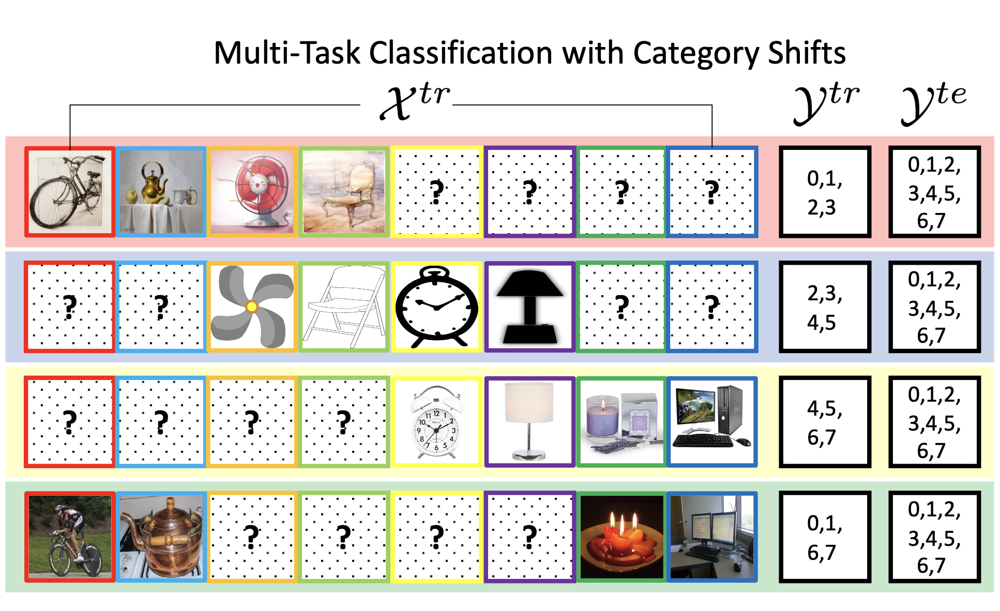
Association Graph Learning for Multi-Task Classification with Category Shifts
NeurIPS, 2022A new multi-task learning setting that addresses category shifts from training to test data.
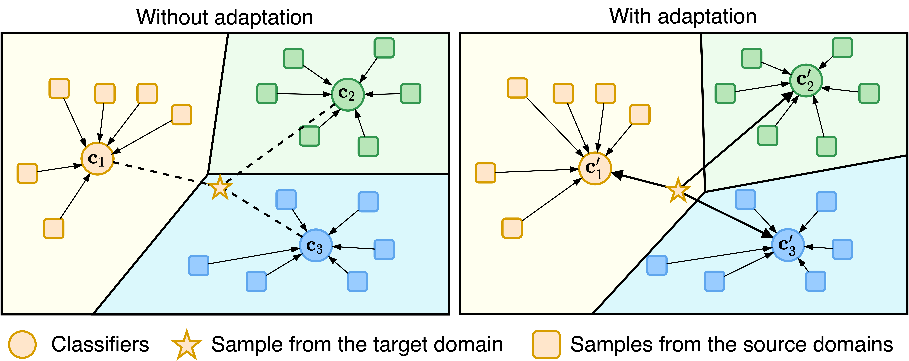
Learning to Generalize across Domains on Single Test Samples
ICLR, 2022A meta-learning paradigm that learns to adapt with single samples at training time, then further adapts to each single test sample at test time.
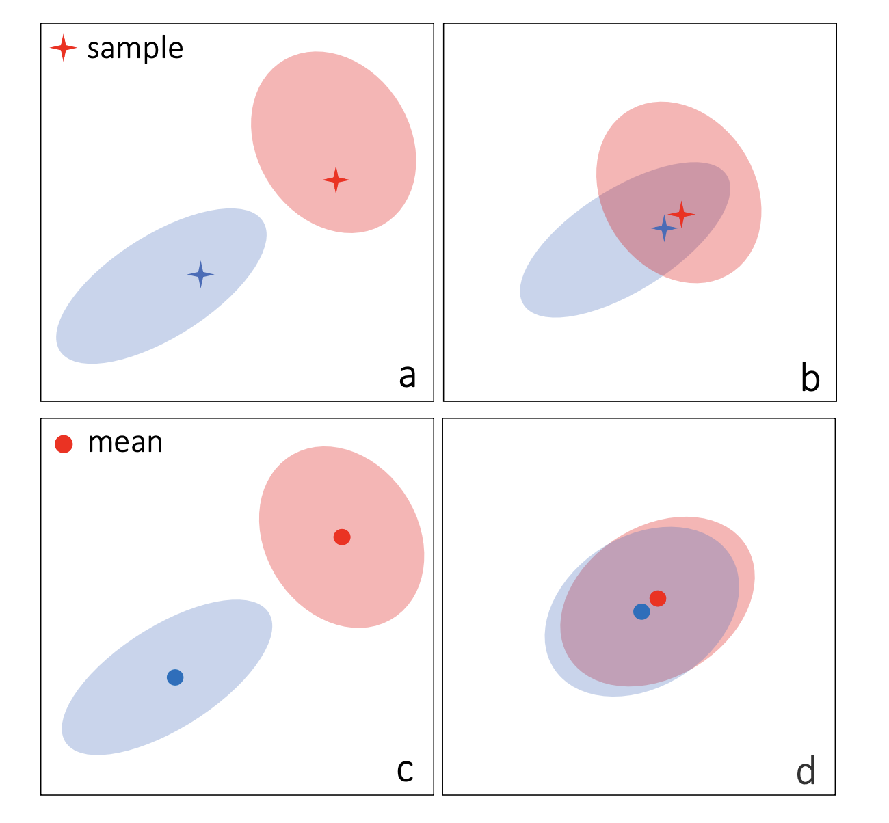
A Bit More Bayesian: Domain-Invariant Learning with Uncertainty
ICML, 2021Introduces weight uncertainty via variational Bayesian inference to better explore domain-invariant learning.
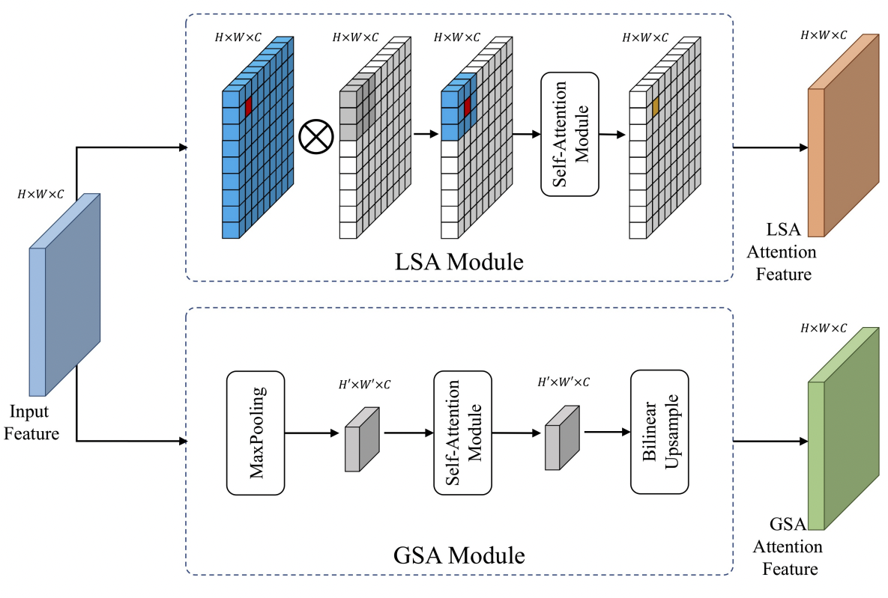
Relational Attention Network for Crowd Counting
ICCV, 2019A self-attention mechanism capturing pixel interdependence for crowd counting and density estimation.
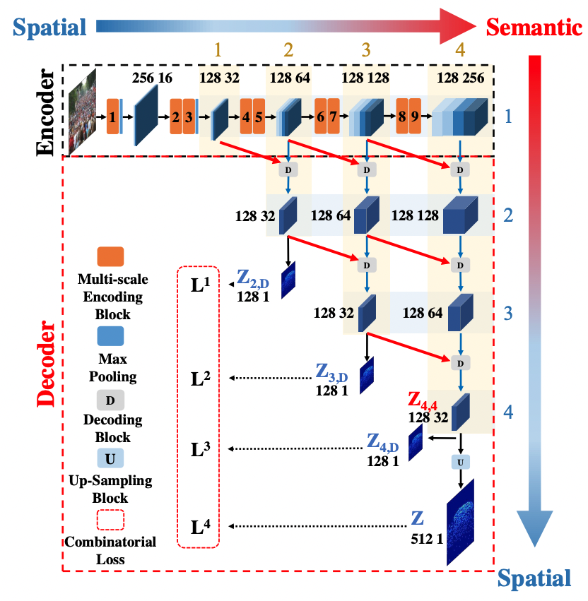
Crowd Counting and Density Estimation by Trellis Encoder-Decoder Networks
CVPR, 2019A trellis encoder-decoder network for crowd counting that generates high-quality density maps.
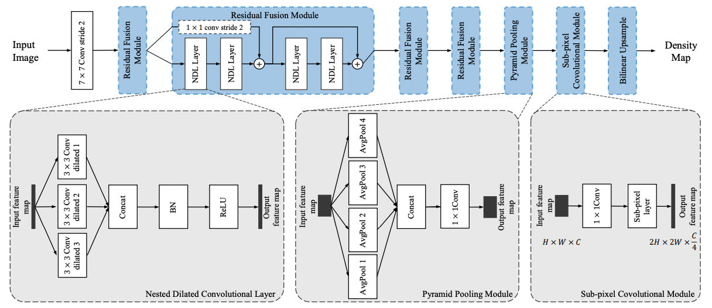